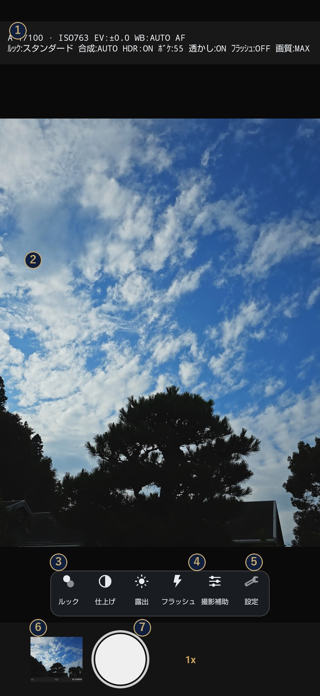
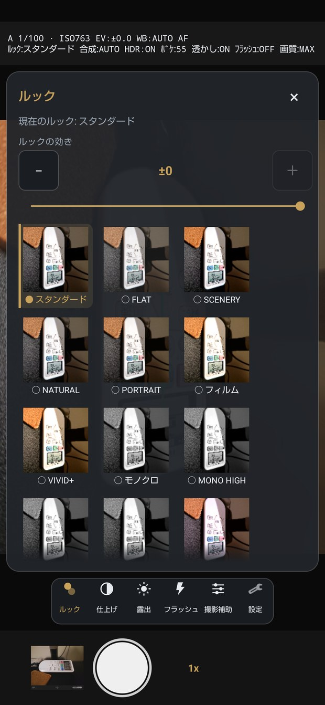
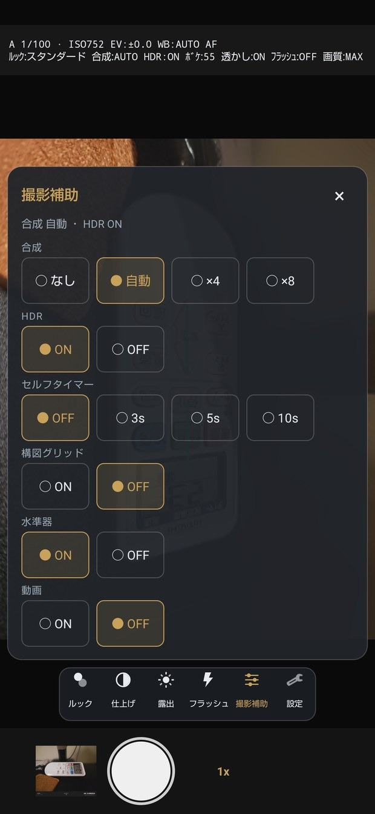
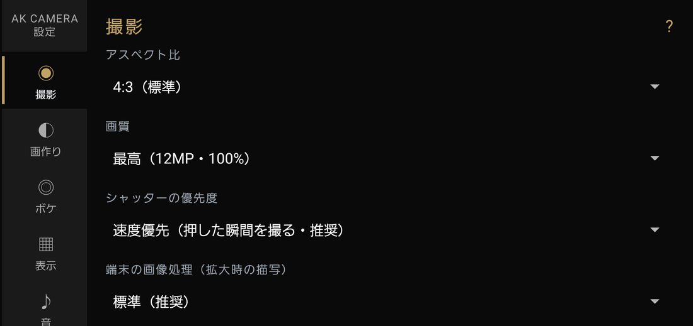

Guide
難しい設定をしなくても、シャッターを押すだけで写真になります。 このページは「もう少し踏み込みたくなったとき」と「設定の意味が分からないとき」に読むためのものです。 気になるところだけ拾い読みしてください。
困っていることがあるときは、先に よくある質問 を見ると早いかもしれません。
01

下の帯には左から ルック / 仕上げ / 露出 / フラッシュ / 撮影補助 / 設定 が並びます（表示モードが「標準」のとき）。 押すとその場で小さな面が開き、値を変えるとすぐプレビューに出ます。 シャッターの右にある「1x」はレンズの切り替えです。
02
| タップ | そこへピントと明るさを合わせる |
|---|---|
| 長押し | ピントと明るさを固定する |
| 枠をなぞる | 置いたピントの枠を動かす |
| ダブルタップ | 倍率を 1x → 2x → 4x → 1x と送る |
| ピンチ | 倍率を無段階で変える |
| 左右に払う | ルックを前後に送る（一覧を開かずに色を変えられます） |
暗いところでは、自動で何コマかを続けて撮って重ねます（合成）。 押したあと少しのあいだは、そのまま構えていてください。 重ねる・ぼかす・色を整えるといった処理はすべて端末の中で行うので、保存まで数秒かかることがあります。 端末が熱くなっているときは、写真を確実に残すために重ねる枚数を減らしたり、HDR を止めたりします。 そのときは画面に一言出ます。
03
シャッターの左にある直前の1枚をタップすると、アプリの中の写真ビューアが開きます。
04

下の帯のルックから選びます。選んだ瞬間にプレビューが変わるので、撮る前に決められます。 プレビューを左右に払っても、順に送れます。
スタンダード / NATURAL / FLAT / SCENERY / PORTRAIT / フィルム / VIVID+ / フード / モノクロ / MONO HIGH / MONO SOFT / MONO GRAIN / ティール / ウォーム / ネガ / クローム / STREET / CINE D / CINE V / CINE SOFT / REC709
一覧の上の「ルックの効き」で、その色をどれくらい強く当てるかを ± で変えられます。 「この色は好きだけど、もう少し薄く」というときに下げてください。 表示モードが「プロ」のときは、その上に彩度も出ます。
使わないルックは 設定 > 画作り で隠せます。払って送るときの一周が短くなります。
下の帯の仕上げには4つあります。どれも動かすとプレビューに出ます。
端末によっては、明瞭度とシャープの強さがプレビューに出ないことがあります（写真には設定どおりに掛かります）。 その端末では、設定 > 画作り に注意書きが出ます。
05

OFF / 自動 / 強制発光 / 弱フィル / 常時点灯。弱フィルは一瞬強く光らせるのではなく、 弱く点けたまま撮って、その場の雰囲気を残す使い方です。 端末や前面カメラによっては使えない方式があり、そのときは選べないか OFF に戻ります。 フラッシュを使っているあいだは、ナイトモードと HDR が止まります。
06
撮影画面の上のボタンか、設定 > 表示 > 表示モード（縦持ち） で切り替えます。初めて起動したときのガイドでも選べます。
07

撮影画面の設定を押すと開きます。左に 撮影 / 画作り / ボケ / 表示 / 音 / 保存 / 設定 / アプリ / 開発 の9つのタブが並び、 押したタブの項目が右に出ます。右上の ? を押すと、そのタブで何を決めるのかが出ます。
変えた値はその場で保存され、次に起動したときもそのままです。 露出補正・合成・HDR・フラッシュのように撮影画面でも変えられる項目は、どちらで変えても同じ値です。
下の一覧の「初期値」は、入れた直後の値です。Android 12 以下の端末やメモリの少ない端末では、 動作を軽くするために 合成＝使わない / 画質＝標準 / ボケをプレビューに反映＝OFF から始まります。
記録する写真の大きさ、ピント、明るさの決まりごと。
暗くなったときの順番（P と S のとき）
暗くなるにつれて、まずシャッター速度を「最低シャッター速度」に置いたまま ISO を「低ノイズ優先ISO」まで上げます。 次にシャッター速度を「上限」まで遅くして粘り、それでも足りなければ ISO を「ISO上限」まで上げます。 下の4つはこの順番の区切りを決める項目で、A（おまかせ）のときは効きません。
撮った写真をどう仕上げるか。色・明暗・質感。
奥行きを端末の中で推定して、ピントの外をぼかす機能。
撮影画面の見え方。写真の中身は変わりません。
保存されるファイルと、写真に入れる文字。
_orig を付けて一緒に保存します。あとで自分で仕上げたい人向けです。容量は倍近く使います。不具合を調べるためのタブ。ふだん触る必要はありません。
08
どれも「まずはこう」という出発点です。撮ってみて、好みで戻してください。
処理が減るぶん、保存までの時間も短くなります。
09
Pictures/AKU CAM フォルダに、AKUCAM_日付_時刻.jpg という名前で入ります。ギャラリーや Google フォトなど、ほかのアプリからもそのまま開けます。Movies/AKU CAM フォルダに入ります。_orig 付きの JPEG が、RAW が ON なら .dng が並びます。10
よく聞かれることは よくある質問 にまとめました。 英語で表示される、写真が緑になる、画面が真っ黒、シャッター音、透かしなども、そちらにあります。
「カメラを開始できません」と出たときは、その画面のセーフモードで起動を押してください。 重い設定をいったん切って、カメラをつなぎ直します。設定画面からなら 設定 > 開発 > カメラを既定設定で起動（セーフモード） です。
設定 > 開発 > 診断レポート から、そのときの状況を書き出せます。 写真そのものや位置情報は入りません。落ちた直後のものがいちばん参考になります。 設定 > アプリ > メールで連絡する から送ると、バージョンと端末名が自動で入ります。 メールアドレスは sakego.syasai@gmail.com です。「何をしたら起きたか」を一言添えていただけると助かります。
すべてを最初に戻すボタンはありません。カメラまわりの重い設定だけなら、上のセーフモードで戻せます。 いろいろ試す前に 設定 > 設定 > 設定をエクスポート で控えを取っておくと、あとで同じ設定に戻せます。